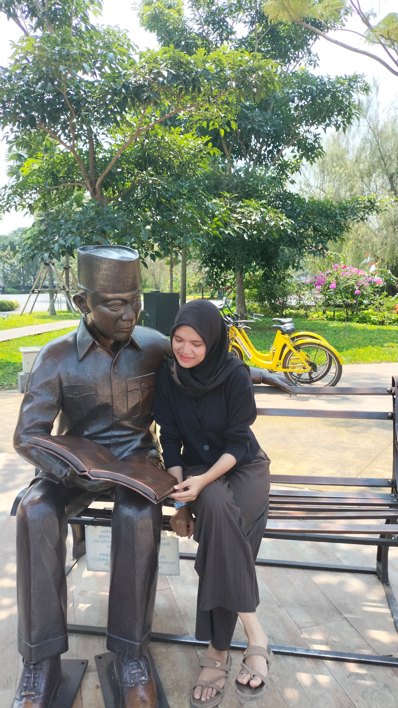

Tentang Hamiya Aisya Mardhiya
Hamiya Aisya Mardhiya atau sering dipanggil Miya, Miww, Miyaw atau kalau dipanggil pasti nengok. Saya adalah anak ketiga dari empat bersaudara. Saya memiliki rasa ingin tahu yang besar dan selalu bersemangat untuk terus belajar. Sebagai anak rantau, saya juga belajar untuk mandiri dan mengatur kehidupan jauh dari keluarga. Salah satu keinginan saya adalah seperti kaluna Waupun kerjaan saya tiap gabut co barang random. oleh karena itu, tujuan saya saat ini adalah menabung untuk masa depan yang lebih baik
Saat ini Hamiya Aisya Mardhiya, sedang menempuh pendidikan di Politeknik Manufaktur Bandung di jurusan Teknologi Rekayasa Informatika Industri untuk mencapai cita-citanya. Miya sudah banyak belajar mengenai berbagai macam bahasa pemrograman yang sangat menggugah keingintahuannya. Saat ini Hamiya Aisya ingin belajar menjadi seorang Full Stack Developer dan sedang menyelesaikan sertifikasi pelatihan Web dari Dicoding. Tolong dukung terus Hamiya Aisya Mardhiya ya.